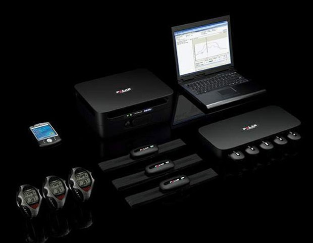
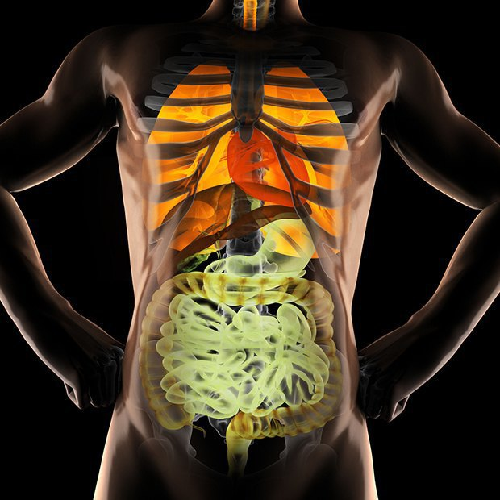
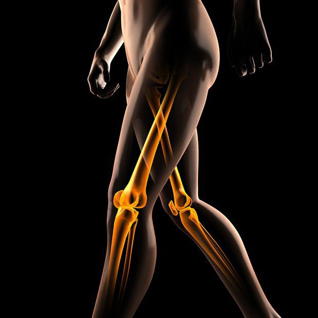

The monitoring system for each athlete during training - Severe times, WHEN THE LOADS FOR EACH ATHLETES WERE NOT DOSED, and everyone acted on a single gain, in the past. Now doctors, physiotherapists and coaches constantly monitor each athlete on the go and select the characteristics of the load on the spot. For this, a heart rate and work intensity monitoring system has been installed, which measures the individual value of the pulse load, and also determines the boundaries of work in different power consumption modes. Order product

3D TECHNOLOGIES HELP DOCTORS NOT ONLY DEFINE THE DIAGNOSIS AND SERIOUSITY OF DAMAGE, but also monitor the healing process and determine the timing of the athlete's return to duty. “This has long been used in Russia as well. Together with the magnetic resonance imaging, a 3D image is prepared. This much more clearly demonstrates damage to the joint, it is easier to build a treatment method, ”confirms sports doctor Eduard Bezuglov.

X-RAY EXAM: BONE AGE STUDY IS USED IN THE RARE TIMES when federations have doubts about the real age of athletes: as a rule, this applies to people from Africa and Arab countries, where they often change the date of birth in the passport in order to have a good chance of getting into to a decent club or national team of his age. The test technology is simple: the athlete undergoes a standard magnetic resonance imaging, only first a picture of the whole body is taken, and then a picture of both hands is taken. After that, doctors determine the age of a person by special signs, however, they don’t tell exactly what these signs are. More info..

Cookie statement